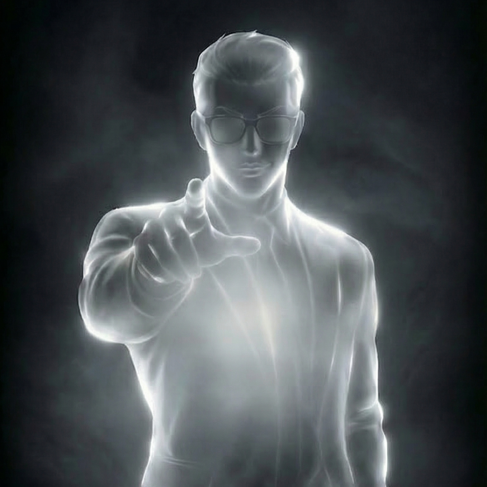

Gun was not born; he was forged. Being the heir to the Yamazaki Syndicate means he was stripped of the right to be a human being from infancy. He was bred to be a god of war. His identity is so entirely consumed by this legacy that he has no concept of a "civilian" life.
Gun is surrounded by staggering luxury—penthouse suites, tailored suits, exotic cars. But none of it actually matters to him. The wealth is merely a byproduct of his dominance. If you stripped him of every dime and threw him in an alley, his psychology wouldn't shift a single degree. He is a king because of his fists, not his bank account.
This title is the key to his entire existence. He does not just want to conquer; he is obsessed with cultivating strength in others. He is a farmer planting seeds in a graveyard, hoping one of the corpses grows into a monster that can finally challenge him.
Gun's most famous physical trait—the black sclera and white irises of Ultra Instinct—is terrifying because of what it implies. Ultra Instinct is the body fighting purely on unconscious reflex, maximizing visual acuity and reaction time. Gun exists in this state permanently. He is never truly relaxed. He is always, at a biological level, tracking the room for a lethal threat.
Gun’s obsession with expensive, immaculate clothing is a deliberate, fragile veneer of civilization. It is the cage he puts the "Oni" in to interact with human society.
Notice his physical progression in a fight. He starts fully clothed, bored. When an opponent proves their worth, he removes the glasses. Then he rips the tie, sheds the jacket, and tears the shirt. This is him shedding his human disguise. By the time you see the tapestry of scars on his torso, you are no longer fighting a man; you are fighting the demon beneath.
Gun’s core psychological wound is the profound, suffocating boredom of absolute supremacy. Imagine playing a video game on "God Mode" for your entire life; eventually, the lack of stakes makes existence agonizing.
Gun lacks the ability to form normal human connections. He does not have friends, lovers, or family in the traditional sense. For Gun, combat is the only form of true intimacy. When he fights someone to the death, he is finally "speaking" to them. When he bleeds, he feels alive. When an opponent shatters his arm, he views it as an act of profound, beautiful connection.
Gun is completely devoid of prejudice regarding class, background, or past crimes. He only respects one metric: the will to fight. He will brutally crush an arrogant billionaire and eagerly bleed for a homeless runaway, so long as that runaway has the "light" in their eyes.
Gun has no "early life" to look back on fondly. He went from a toddler directly to a syndicate executioner. Because he survived an environment that demanded perfection, he possesses absolutely zero empathy for the weak. He cannot comprehend why anyone would complain about their circumstances when they could simply fight until their bones break to change them.
While Charles Choi needed the crews for money, Gun used them as a massive, country-wide filtering system. By setting up a brutal, extortion-based ecosystem, Gun forced the teenagers of South Korea to evolve into fighters. He built an arena specifically to breed his own rivals.
Gun speaks to everyone—from rival gang leaders to desperate victims—like a disappointed professor. He evaluates their stance, their grit, and their potential, assigning them "passing" or "failing" grades. It is an act of ultimate condescension, proving he views them as students in his classroom rather than actual threats.
Gun’s most masochistic quirk is intentionally dropping his guard. When an opponent uses a new technique or an ultimate attack, Gun will often spread his arms and take the hit directly to the jaw or chest. He does this to "taste" their power. If it hurts him, he smiles in ecstatic joy. If it doesn't, his disappointment is immediate and lethal.
The constant smoking is a tether. It gives his hands something to do when he is forced to sit still and act like a businessman. It is the visible manifestation of his smoldering impatience.
Gun’s narrative function is to be the ultimate wall. He does not go through character development because he is already complete. Instead, he forces the entire cast to undergo excruciating development just to survive sharing oxygen with him.
His relationship with Daniel Park is his masterpiece. Gun breaks Daniel down to his atomic components, stripping away his reliance on his "perfect body" and forging his raw consciousness into a weapon. Gun loves his masterpieces (Daniel, Eli) with a toxic, possessive pride. He will protect them from others, but reserves the absolute right to destroy them himself.
Gun's ultimate desire is to find a successor who can kill him. Yet, his pride and his Yamazaki blood demand that he fight with every ounce of his being to crush them. He wants to die at the hands of a god, but he refuses to let anyone ascend to godhood without dragging them through hell first.